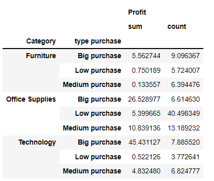
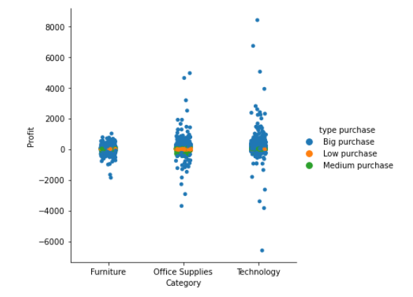
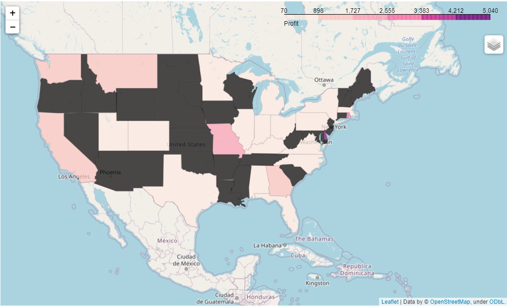
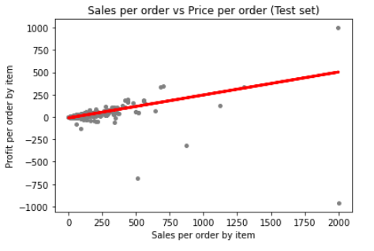
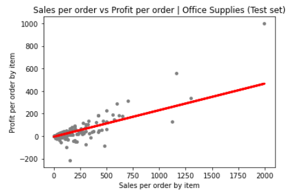
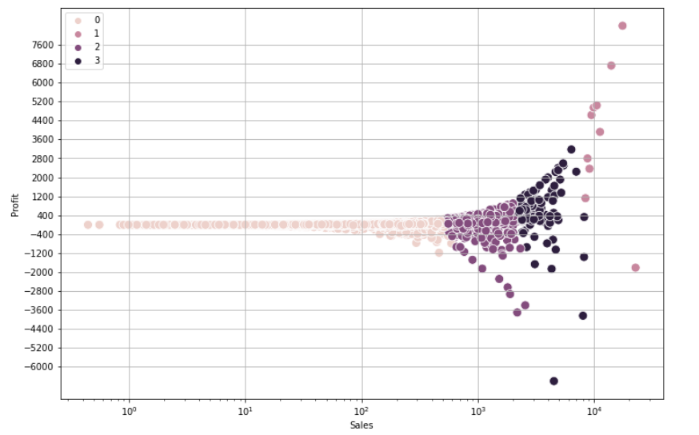
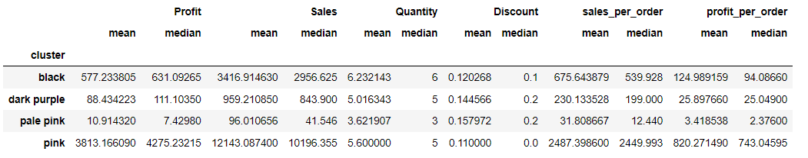
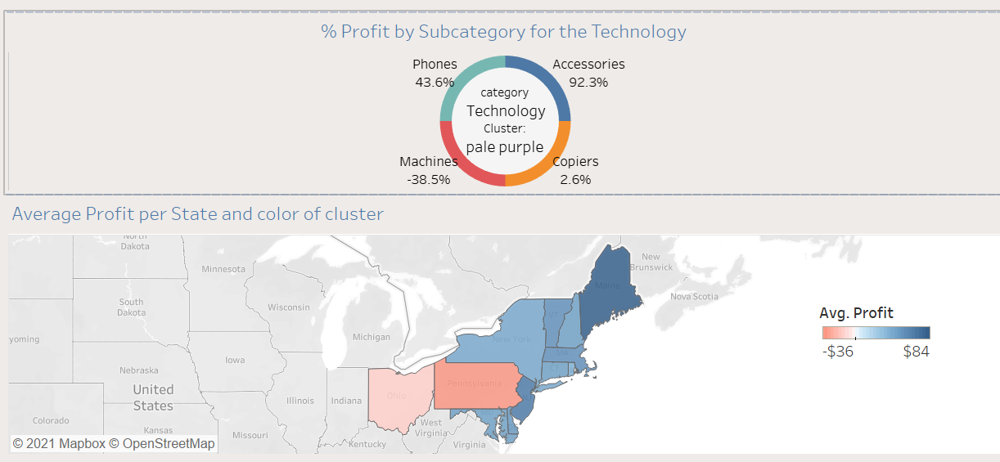

Superstore Profit Analysis - Python Project
Motivation:
Sales have been always considered to be the engine that allows a business to go for miles and miles. However, how useful is to reach far distances when the journey has left the engine drowned? This is what happens when the focus is mostly on top line, and not how profit is being made.
Business Questions:
- How to segment the data to better understand the behavior of profit?
- How does the behavior of sales affect profitability?
- Can any variable predict profitability?
Context
This is a project I did as part of a course in data analytics at Career Foundry. On this project I decided to use the SuperStore dataset which represents a sample of online sales for USA retailer store. It includes information of orders, multiple categories, and geographical locations. This is an external and open-source dataset that was created by Tableau for educational purposes in order to familiarize its new users to visualizations. The data was not collected and was generated fictitiously to simulate a retail business. Therefore, extrapolating its behavior to generalize or draw conclusions about similar type of businesses is not recommended.
Dataset
The database used for this project can be found in the following link.
Limitations
As mentioned above the data is based on fake realistic looking data, so it has not been collected from real transactions made by customers. Therefore, there are no ethical or unlawful matters compromising the security and privacy of users. Possible limitations are the restrictions of measuring the accuracy of the data against real data collected by internal sources, meaning, we cannot estimate how close this data mimic the real world of online shopping.
1. Data Exploration
These are some of the initial visualizations where we can see that most of the sales come from the technology category. From the scatter plot we can see the moderate relationship between sales and profit.


One thing to note is that sales concentrate around $54.48, only 25% are higher than $209.9, and on average sales are $230. Given these statistics, three groups were created to further analyse profit:
| Group Name | Description |
|---|---|
| Low Purchases | Purchases less than $55 |
| Medium Purchases | Purchases between $55-$230 |
| Big Purchases | Purchases above $230 |
The following table has the percentage of profit and number of orders broken down by category and type of purchase.
This categorical chart evidence how strong is the share of big purchases, accounting for 45%.
A closer look into big purchases from technology shows that the subcategories of copiers account for 38% and only representing 3.7% of the total purchases of the category. The following map showed the profitability per state for this subcategory.
So as a final step and before proceeding with a regression analysis, a heatmap was created in order to understand the correlation of all numerical variables with profit. The results indicate that sales is the variable showing the highest affinity with profit.

Linear Regression Analysis
For running this model, sales was treated as the predictor variable of profit. Below in the graph we can see a plot of sales against profit for all the orders. The red line is trying to pass through the mayority of points, but it fails to do so as the points are very disperse and their distance to the line tends to grow apart. When this happens, it's a sign that the model is a poor choice as it doesn't explained much of the variance.
Part of the reason of this behaviour can be explain by the extensive range between the minimum and maximum values within each of purchases groups. Let's see the outliers for all categories.

The model was rerun a second time by removing the extreme values and it did improve the results. however, let's bear in mind that the outliers are not innacurate data and because of this is better to explore an alternative option to approach profit. 
Other Approach: Cluster Analysis
This time the approach will not just use the variable of sales, but all the other quantitative variables (quantity and discount) to see if we can uncover segments that share common traits. This segmentation is commonly known as cluster analysis approach - K-Means. Let's us remeber that when we were doing data visualization before, we grouping the data based on the type of purchase (big, medium and low) making partitions based on the mean and the median values of the variable sales.
The result were 4 clusters: Below is a profile for each of the clusters: 
In terms of profit, the best stats are in the pink cluster for an average of $3813 and only 10 observations. The sales seems to be the highest compare to the other clusters. There is no significant diference in quantity when compared to the other clusters. Other important characteristic of this group is that it it has the lowest discounts.
Most of the orders are concentrated in the pale pink cluster where sales are inferior to $1000 and there is the least variability of profit ranging from -$1200 to less than $400 (this is evidenced in the scaterred plot). Important is to see that this cluster has the least average profitability and sales, as well, as the lowest number of items per order, which makes sense since small purchases comprise only just a few items-3 items in average.
Comparison between the two approaches and Next Steps
When compared to the type of purchase approach, it is evident they both differ. Which bring us to our research question, which is the best approach to analyse profit? From the optic of type of purchase, the approach is to group data more evenly among groups based on central tendencies. The problem? It is hard to apply a linear regression model and perform more sophisticad analysis. On the other hand, the cluster analysis concentrates most of the data points on orders with the lowest profitability (pale purple cluster), guaranteeing that these points resemble more to each other and that it makes sense they belong to this group and not to other one.
Having more clusters allows to reduce the gap between the maximum and minumum values, therefore the possibility of having a lot of outliers is less. In the case of the technology category which accounts for 50.79% of the profit, having four types of clusters allows more room for analysis. Whereas, using the other approach for the technology category where 89.46% are big purchases that range from $230 until $22,000 makes it hard to make recommendations based in such disperse group. S
Next steps include to go to a deeper granularity. For example, for each cluster explore in every category the performance of each subcategory. Additionally, cross this against geographical information to know how regions and particular states contribute to profit. Below we show an example for category of technology, filtered by the pale purple cluster for the east region. 